EFI System ECU terminal array |
| Terminal number (terminal symbol) | input output | Measurement conditions | Reference value |
|---|---|---|---|
| B36-1 (#10) ← → B36-7 (E01) | output | After warm -up, when idle rotation | Pulse outbreak (Waveform 1) |
| B36-2 (#20) ← → B36-7 (E01) | output | After warm -up, when idle rotation | Pulse outbreak (Waveform 1) |
| B36-3 (#30) ← → B36-7 (E01) | output | After warm -up, when idle rotation | Pulse outbreak (Waveform 1) |
| B36-4 (#40) ← → B36-7 (E01) | output | After warm -up, when idle rotation | Pulse outbreak (Waveform 1) |
| B36-5 (RSD) ← → B37-7 (E1) | output | When idle rotation, air conditioner OFF → ON | Pulse outbreak (Waveform 2) |
| B36-6 (E02) ← → Engine Earth | Ground | Always (conductive inspection) | Less than 1Ω |
| B36-7 (E01) ← → Engine Earth | Ground | Always (conductive inspection) | Less than 1Ω |
| B36-8 (IGT1) ← → B37-7 (E1) | output | After warm -up, when idle rotation | Pulse outbreak (Waveform 3) |
| B36-9 (IGT2) ← → B37-7 (E1) | output | After warm -up, when idle rotation | Pulse outbreak (Waveform 3) |
| B36-10 (IGT3) ← → B37-7 (E1) | output | After warm -up, when idle rotation | Pulse outbreak (Waveform 3) |
| B36-11 (IGT4) ← → B37-7 (E1) | output | After warm -up, when idle rotation | Pulse outbreak (Waveform 3) |
| B36-12 (PRG) ← → B37-7 (E1) | output | Engine stop, IG ON | 11 and 14 v |
| After warm -up, when idle rotation, purging control | Pulse outbreak (Waveform 4) | ||
| B36-15 (OC1+) ← → B36-14 (OC1-) | output | After warm -up, when idle rotation | Pulse outbreak (Waveform 5) |
| B36-18 (VC) ← → B36-28 (E2) | output | Engine stop, IG ON | 4. 5 and 5. 5 v |
| B36-19 (THW) ← → B36-28 (E2) | input | Cooling water temperature 60 to 120 ° C (when warm -up) | 0.2 and 1.0 v |
| B36-20 (THA) ← → B36-28 (E2) | input | Inspiratory temperature 0 to 80 ° C (when warm -up) | 0.5 and 3.4 v |
| B36-21 (VTA) ← → B36-28 (E2) | input | Throttle valve fully closed | 0.3 and 1.0 v |
| Throttle valve fully open | 3.2 and 4. 9 v | ||
| B36-22 (ALTC) ← → B37-7 (E1) | output | When cutting alternator power generation | 0 and 1. 5 v |
| B36-23 (IGF1) ← → B37-7 (E1) | input | After warm -up, when idle rotation | Pulse outbreak (Waveform 3) |
| B36-26 (G2+) ← → B36-34 (NE-) | input | After warm -up, when idle rotation | Pulse outbreak (Wave shape 6) |
| B36-27 (NE+) ← → B36-34 (NE-) | input | After warm -up, when idle rotation | Pulse outbreak (Wave shape 6) |
| B36-28 (E2) ← → Engine Earth | Ground | Always (conductive inspection) | Less than 1Ω |
| B37-6 (E03) ← → Engine Earth | Ground | Always (conductive inspection) | Less than 1Ω |
| B37-3 (HT1B) ← → B37-2 (E03) | output | Engine stop, IG ON | 11 and 14 v |
| Oxygen Sensor in front of warm -up, when idle rotation | 0 and 3 V | ||
| B37-4 (HA1A) ← → B37-5 (E04) | output | Engine stop, IG ON | 11 and 14 v |
| After warm -up, when idle rotation | Pulse outbreak (Waveform 7) | ||
| B37-5 (E04) ← → Engine Earth | Ground | Always (conductive inspection) | Less than 1Ω |
| B37-7 (E1) ← → Engine Earth | Ground | Always (conductive inspection) | Less than 1Ω |
| B37-8 (NSW) ← → B37-7 (E1) | input | Shift lever P or N position | 0 and 3 V |
| Other than shift lever P or N position | 11 and 14 v | ||
| B37-9 (STA) ← → B37-7 (E1) | input | When cranking | 5.5 v or more |
| B37-20 (Alt) ← → B37-7 (E1) | input | Engine stop, IG ON | 11 and 14 v |
| B37-22 (KNK1) ← → B37-21 (EKNK) | input | After warming, hold it with the engine speed of 4000 rpm | Pulse outbreak (Waveform 8) |
| B37-23 (OX1B) ← → B36-28 (E2) | input | When it is retained for 2 minutes with an engine speed of 2500 rpm after the oxygen sensor heating hardware | Pulse outbreak (Waveform 9) |
| B37-24 (VG) ← → B37-32 (E2G) | input | After warm -up, when idle rotation | 0. 5 and 3 v |
| B37-28 (EC) ← → Engine Earth | Ground | Always (conductive inspection) | Less than 1Ω |
| B37-29 (PSP) ← → B36-28 (E2) | input | Keep the steering straight ahead when idle rotation | 11 and 14 v |
| Steering turning operation when idle rotation | 0 and 1. 5 v | ||
| B37-30 (A1A-) ← → B37-7 (E1) | input | Different sound | 2.7 and 3.3 v |
| B37-31 (A1A+) ← → B37-7 (E1) | input | Different sound | 3 and 3. 6 v |
| D54-2 (ACMG) ← → B37-7 (E1) | output | At the time of idle rotation Blore switch LO, A/C switch ON | Pulse outbreak (Waveform 10) |
| D54-3 (COOL) ← → B37-7 (E1) | output | When the water temperature low temperature indicator lamp is lit | 11 and 14 v |
| When the water temperature low temperature indicator lamp is off | 0 and 3 V | ||
| D54-6 (ELS1) ← → B37-7 (E1) | input | Defoga ON or tail lamp ON or accessory outlet (AC 100 V) Main switch ON | 11 and 14 v |
| Defoga ON or Tail Lamp ON or Accessory Outlet (AC 100 V) Main Switch OFF | 0 and 1. 5 v | ||
| D54-7 (ODLP) ← → B37-7 (E1) | input | O/D switch ON | 11 and 14 v |
| O/D switch OFF | 0 and 1. 5 v | ||
| D54-17 (SPD) ← → B37-7 (E1) | input | When driving at about 20km/h | Pulse outbreak (Waveform 11) |
| D54-19 (STP) ← → B37-7 (E1) | input | Stop lamp switch ON (Step on the brake pedal) | 7. 5 and 14 v |
| Stop lamp switch OFF (Do not step on the brake pedal) | 0 and 1. 5 v | ||
| D54-28 (HOT) ← → B37-7 (E1) | output | When the water temperature and high temperature indicator lamps are lit | 11 and 14 v |
| When the water temperature and high temperature indicator lamps are off | 0 and 3 V | ||
| D54-31 (A/CS) ← → B37-7 (E1) | input | Air conditioner on (Magnet clutch ON) | 0 and 1. 5 v |
| D53-1 (+B) ← → B37-7 (E1) | input | Engine stop, IG ON | 11 and 14 v |
| D53-3 (BATT) ← → B37-7 (E1) | input | Always | 11 and 14 v |
| D53-5 (tach) ← → B37-7 (E1) | output | After warm -up, when idle rotation | Pulse outbreak (Waveform 12) |
| D53-6 (FanL) ← → B37-7 (E1) | output | Engine stop, IG ON | 11 and 14 v |
| Air conditioner on | 0 and 0. 5 v | ||
| D53-7 (Fanh) ← → B37-7 (E1) | output | Cooling water temperature 94.5 ° C or less | 11 and 14 v |
| Cooling water temperature 96 ° C or more | 0 and 0. 5 v | ||
| D53-10 (FC) ← → B37-7 (E1) | output | Engine stop, IG ON | 11 and 14 v |
| After the engine starts | 0 and 1. 5 v | ||
| D53-11 (W) ← → B37-7 (E1) | output | Separate the water temperature sensor catter (When checking engine warnin gland lamps) | 0 and 1. 5 v |
| After warm -up, when idle rotation (When the check engine warnin grand lamp is turned off) | 11 and 14 v | ||
| D53-13 (inhl) ← → B37-7 (E1) | input | Blore on | 0 and 1. 5 v |
| Blore OFF | 11 and 14 v | ||
| D53-14 (F/PS) ← → B37-7 (E1) | input | After warm -up, when idle rotation | Pulse outbreak (Waveform 13) |
| D53-18 (SIL) ← → B37-7 (E1) | output | Connect TASCAN to DLC3 and communicate | Pulse outbreak (Waveform 14) |
| D53-19 (WFSE) ← → B37-7 (E1) | input | When writing flash | 0 and 1. 5 v |
| D53-20 (TC) ← → B37-7 (E1) | input | Engine stop, IG ON | 11 and 14 v |
| DLC3 TC ← → CG terminal short circuit | 0 and 3 V |
| 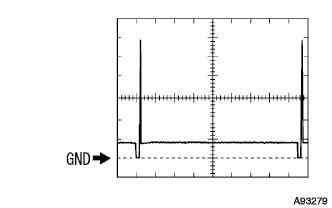 |
Waveform 1
| item | Content |
|---|---|
| Measuring terminal | #10,#20,#30,#40 ← → E01 |
| Instrument set | 20 v / ぢ v, 20 ms / ぢ v |
| conditions | After warm -up, when idle rotation |
| 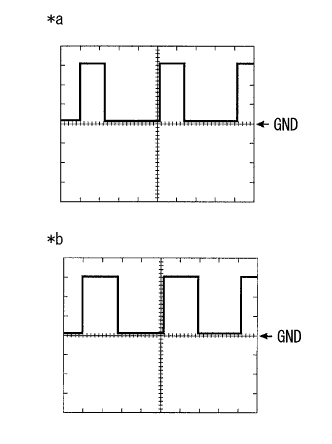 |
Waveform 2
| item | Content |
|---|---|
| Measuring terminal | RSD ← → E1 |
| Instrument set | 5 v / ぢ v, 1 ms / ぢ v |
| conditions | When idle rotation, air conditioner OFF → ON |
| *a | Air conditioner OFF |
| * B | Air conditioner on |
| 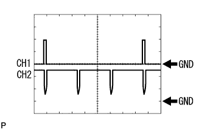 |
Waveform 3
| item | Content |
|---|---|
| Measuring terminal | CH1: IGT1, IGT2, IGT3, IGT4 ← → E1 Ch2: IGF1 ← → E1 |
| Instrument set | 2 V / ぢ V, 20 ms / ぢ v |
| conditions | After warm -up, when idle rotation |
| 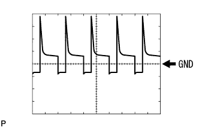 |
Waveform 4
| item | Content |
|---|---|
| Measuring terminal | PRG ← → E1 |
| Instrument set | 10 v / ぢ v, 50 ms / ぢ v |
| conditions | After warm -up, when idle rotation, purging control |
| 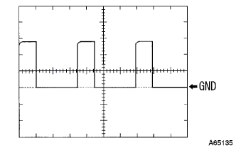 |
Waveform 5
| item | Content |
|---|---|
| Measuring terminal | OC1+ ← → OC1- |
| Instrument set | 5 v / ぢ v, 1 ms / ぢ v |
| conditions | After warm -up, when idle rotation |
| 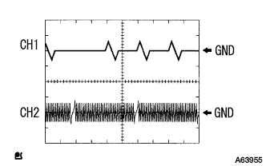 |
Waveform 6
| item | Content |
|---|---|
| Measuring terminal | Ch1: g2+ ← → NE- Ch2: NE+ ← → NE- |
| Instrument set | 5 v / ぢ V, 20 ms / ぢ v |
| conditions | After warm -up, when idle rotation |
| 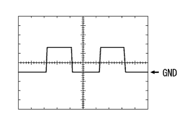 |
Waveform 7
| item | Content |
|---|---|
| Measuring terminal | HA1A ← → E04 |
| Instrument set | 5 v / ぢ v, 10 ms / ぢ v |
| conditions | After warm -up, when idle rotation |
| 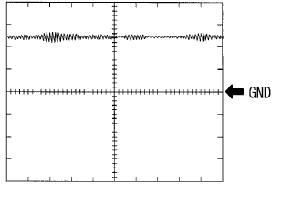 |
Waveform 8
| item | Content |
|---|---|
| Measuring terminal | KNK1 ← → eknk |
| Instrument set | 500 MV / ぢ V, 1 ms / ぢ v |
| conditions | After warming, hold it with the engine speed of 4000 rpm |
| 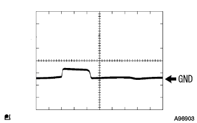 |
Waveform 9
| item | Content |
|---|---|
| Measuring terminal | OX1B ← → E2 |
| Instrument set | 1 v / ぢ V, 500 ms / ぢ v |
| conditions | When it is retained for 2 minutes with an engine speed of 2500 rpm after the oxygen sensor heating hardware |
| 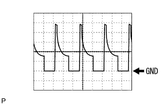 |
Waveform 10
| item | Content |
|---|---|
| Measuring terminal | ACMG ← → E1 |
| Instrument set | 10 v / ぢ v, 1 ms / ぢ v |
| conditions | At the time of idle rotation Blore switch LO, A/C switch ON |
| 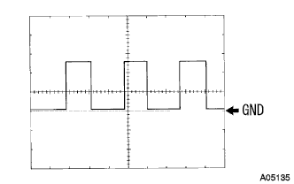 |
Waveform 11
| item | Content |
|---|---|
| Measuring terminal | SPD ← → E1 |
| Instrument set | 2 V / ぢ V, 20 ms / ぢ v |
| conditions | When driving at about 20km/h |
| 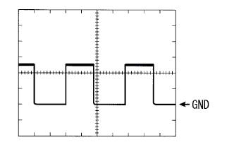 |
Waveform 12
| item | Content |
|---|---|
| Measuring terminal | Tach ← → E1 |
| Instrument set | 5 v / ぢ v, 10 ms / ぢ v |
| conditions | After warm -up, when idle rotation |
| 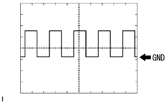 |
Waveform 13
| item | Content |
|---|---|
| Measuring terminal | F/ps ← → E1 |
| Instrument set | 5 v / ぢ V, 500 ms / ぢ v |
| conditions | After warm -up, when idle rotation |
| 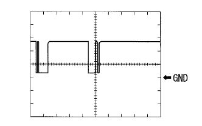 |
Wave form 14
| item | Content |
|---|---|
| Measuring terminal | SIL ← → E1 |
| Instrument set | 5 v / ぢ v, 1 ms / ぢ v |
| conditions | Connect TASCAN to DLC3 and communicate |